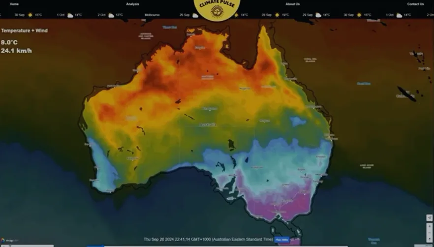
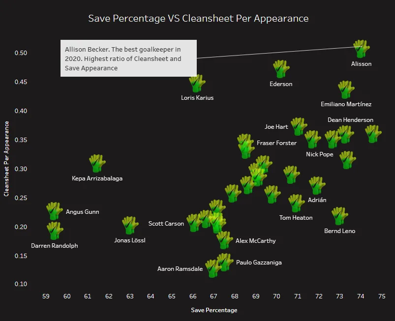
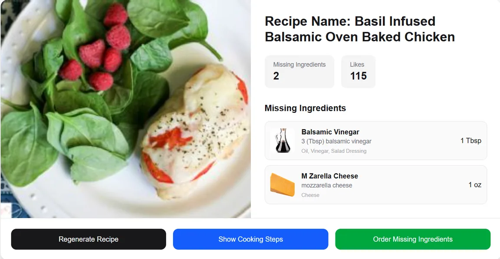
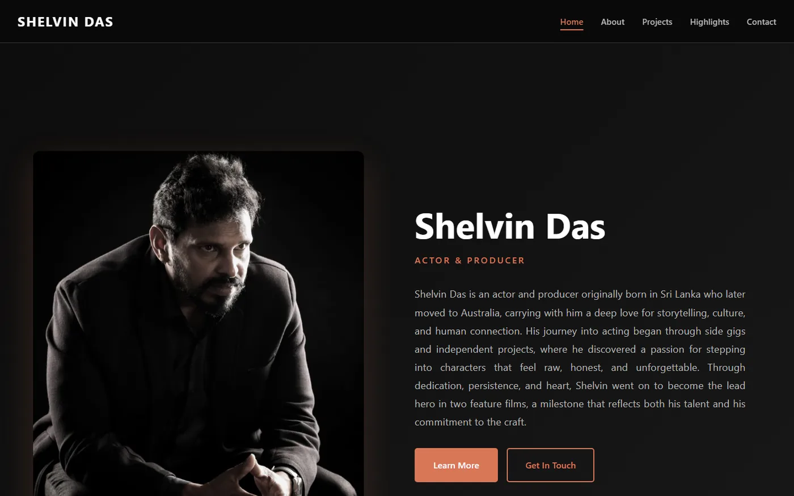

I bridge data and software
I don't stop at the spreadsheet or dashboard. I can also build the applications, APIs and databases that power data-driven solutions, from Python and SQL to FastAPI and Next.js.
Open to graduate & junior roles · Melbourne, open to relocate
Data Analyst Full-Stack Developer
I turn raw data into decisions, and ideas into working software. A Monash Computer Science (Data Science) graduate who can analyse the numbers and build the apps, APIs and databases behind them.
I'm a Computer Science graduate who loves breaking complex problems down, finding what's really causing them, and turning the fix into something practical and easy to understand. I work with Python, SQL and data to uncover useful insights, and I'm just as comfortable building the full-stack applications and databases that put those insights to work.
I studied a Bachelor of Computer Science (Data Science) at Monash University, graduating with a Distinction average, then completed a Graduate Diploma of Business Information Systems in Cyber Security.
Today I support students and staff as a casual IT Support Officer at Monash University and build web applications for clients as a freelance full-stack developer. Before that, as a Data Analyst Intern at the Malaysia Australia Business Council, I turned market research and survey data into recommendations presented to the Executive Committee.
I operate at a graduate / junior level, but I'm hands-on, quick to learn and comfortable owning a problem from start to finish.
I don't stop at the spreadsheet or dashboard. I can also build the applications, APIs and databases that power data-driven solutions, from Python and SQL to FastAPI and Next.js.
At MABC I worked with market research and survey data, found engagement trends, and turned them into recommendations presented to the Executive Committee.
My final-year project took weather data from collection and cleaning, through a PostgreSQL pipeline and forecasting models, to interactive maps people can actually use.
Freelance · Casual
Monash University · Casual
Malaysia Australia Business Council (MABC)
Keep scrolling →Tap a project for the full case study

An interactive web app to explore, analyse and forecast Australian weather patterns with maps, charts and machine learning. My final-year project.
Read case study
How does age affect the performance of professional footballers? An interactive Tableau dashboard comparing Premier League players by position and age group.
Read case study
Snap your fridge, get recipes. A full-stack AI app that detects the ingredients you have and generates personalised recipes with large language models.
Read case studyMore code on
GitHub ↗Live websites I've designed and built as a freelance developer.
Multi-page website for a cinematic video production and photography studio working across Australia, Thailand and Singapore.

Personal portfolio website for an actor and producer, with biography, projects, awards highlights and a photo gallery.
Australian Institute of Higher Education · Melbourne
Monash University · Melbourne
Sunway University · Selangor, Malaysia
Monash University
Prince of Wales Island International School
Two versions, depending on the role. Both are 2-page PDFs.
Hiring for a graduate or junior role? I'd love to hear about it.